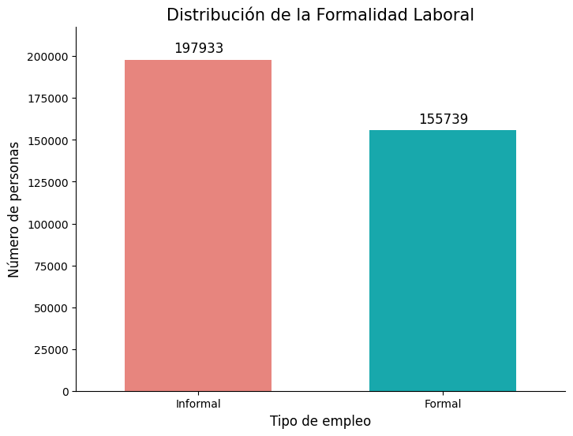
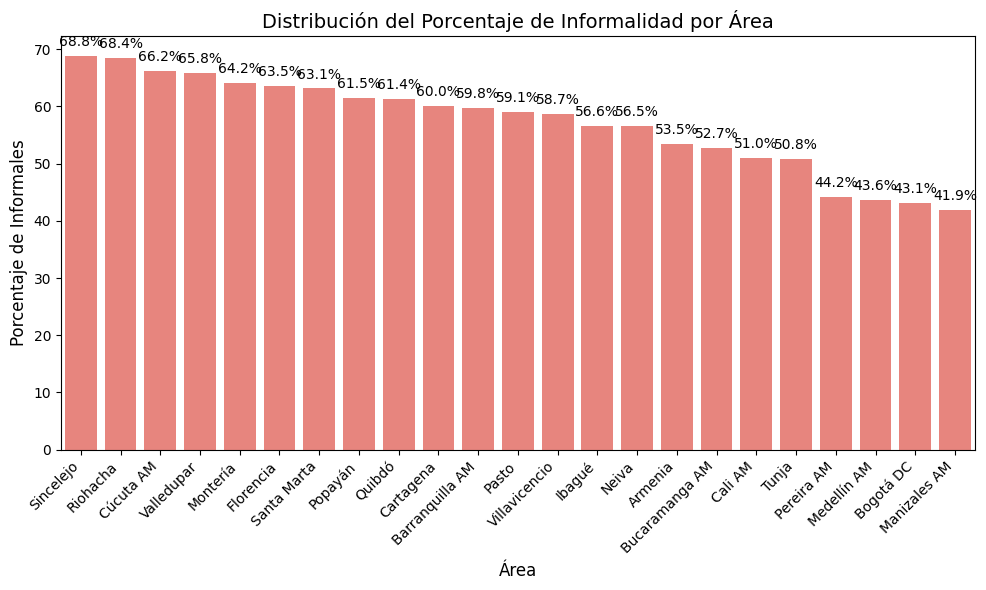
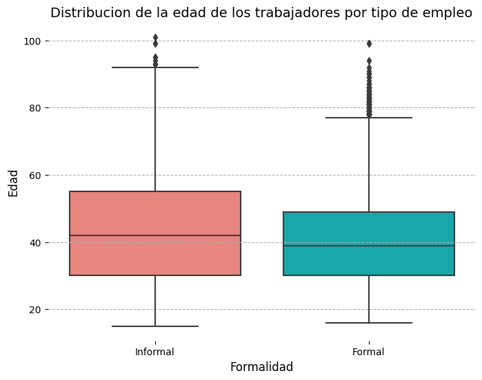
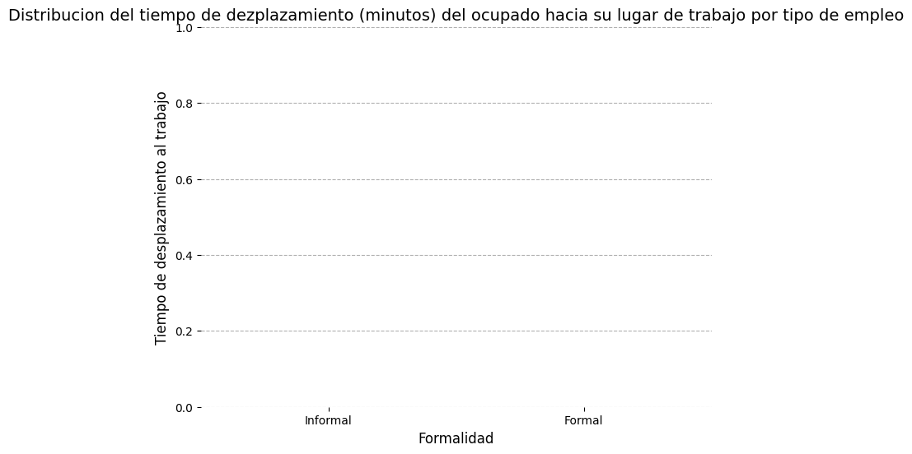

Análisis Exploratorio#
Al realizar la concatenación de los distintos archivos en formato CSV que conforman la GEIH, se obtiene un conjunto de datos de 524 variables y 829.683 filas. Dado que el análisis se realiza con base en la población que afirmó estar ocupada en el año 2024, dicho conjunto se reduce 353.672 filas.
Luego de realizar una revisión bibliográfica se seleccionaron aquellas variables que diversos autores han señalado como influyentes en la posibilidad de obtener empleo formal, y el numéro de variables es finalmente reducido a 29 (8 cuantitativas y 21 categóricas) en donde se encuentra la variable respuesta “formalidad” cuya construcción fue señalada en la metodología de este trabajo.
#Instalamos librerias
import pandas as pd
import pandas as pd
import matplotlib.pyplot as plt
import seaborn as sns
import numpy as np
from scipy.stats import skew, kurtosis
import unidecode
datos = pd.read_csv("/Users/macbook/Downloads/data_filtrada.csv")
Revisaremos si existen datos faltantes en nuestro dataset
print(datos.isnull().sum())
FEX_C18 0
MES 0
AREA 113532
CLASE 0
DPTO 0
Sexo 0
Edad 0
Parentesco con jefe de hogar 0
¿Usted se reconoce como? 0
Estado civil 0
¿Afiliado, cotizante o beneficiario de seguridad social en salud? 0
Régimen de salud al que está afiliado 14347
¿Quién paga por la afiliación en salud? 168219
Sabe leer y escribir 0
Mayor nivel educativo alcanzado 0
Para la ocupación que desempeña, ¿tiene algún tipo de contrato 0
¿El contrato es verbal o escrito? 140428
¿El contrato es a término indefinido o fijo? 214317
¿Cuánto tiempo lleva en esta empresa trabajando de forma continua (meses)? 0
Tipo de ocupación 0
Medio para conseguir este empleo 166241
Ofrece sus servicios o productos para 193533
¿Cotiza actualmente en pensiones? 0
Meses que estuvo sin empleo entre su trabajo actual y el anterior 97606
Tiempo de desplazamiento hasta su sitio de trabajo 50541
Ingresos laborales 15120
El mes pasado, ¿recibió pagos por concepto de arriendos o pensiones? 0
¿Es propietario de una o varias propiedades inmuebles? 0
Tipo de vivienda 0
¿Tiene servicio de energía eléctrica? 0
Estrato para tarifa 1975
Número de hogares en la vivienda 0
Número de cuartos 0
La vivienda ocupada por este hogar es 1762
Total de personas en el hogar 0
formalidad 0
dtype: int64
Porcentaje de variables con datos faltantes#
total_filas = len(datos)
faltantes = datos.isnull().sum()
porcentaje_faltantes = (faltantes / total_filas) * 100
tabla_faltantes = pd.DataFrame({
'Valores Faltantes': faltantes,
'Porcentaje (%)': porcentaje_faltantes
})
tabla_faltantes = tabla_faltantes[tabla_faltantes['Valores Faltantes'] > 0]
tabla_faltantes = tabla_faltantes.sort_values(by='Porcentaje (%)', ascending=False)
print(tabla_faltantes)
Valores Faltantes \
¿El contrato es a término indefinido o fijo? 214317
Ofrece sus servicios o productos para 193533
¿Quién paga por la afiliación en salud? 168219
Medio para conseguir este empleo 166241
¿El contrato es verbal o escrito? 140428
AREA 113532
Meses que estuvo sin empleo entre su trabajo ac... 97606
Tiempo de desplazamiento hasta su sitio de trabajo 50541
Ingresos laborales 15120
Régimen de salud al que está afiliado 14347
Estrato para tarifa 1975
La vivienda ocupada por este hogar es 1762
Porcentaje (%)
¿El contrato es a término indefinido o fijo? 60.597672
Ofrece sus servicios o productos para 54.721041
¿Quién paga por la afiliación en salud? 47.563562
Medio para conseguir este empleo 47.004286
¿El contrato es verbal o escrito? 39.705716
AREA 32.100930
Meses que estuvo sin empleo entre su trabajo ac... 27.597887
Tiempo de desplazamiento hasta su sitio de trabajo 14.290359
Ingresos laborales 4.275148
Régimen de salud al que está afiliado 4.056584
Estrato para tarifa 0.558427
La vivienda ocupada por este hogar es 0.498202
Las variables categóricas cuyo porcentaje de valores nulos fue cercano a cero, fueron imputadas por su moda y la función polyreg (Polynomial Regression) del software R. Por su parte, las variables númericas fueron imputadas por su mediana o por la función “norm.predict” (imputación por regresión). A continuación se muestra el encabezado de este conjunto de datos sin la presencia de datos nulos. Obteniendo así un nuevo conjunto de datos.
datos2 = pd.read_csv("/Users/macbook/Downloads/data_filtrada_imputada.csv")
mapeo_formalidad = {0: 'Informal', 1: 'Formal'}
datos3 = datos2.copy()
datos3['formalidad'] = datos3['formalidad'].map(mapeo_formalidad)
df_formalidad = datos3['formalidad'].value_counts().reset_index()
df_formalidad.columns = ['formalidad', 'n']
colores = {'Informal': '#F8766D', 'Formal': '#00BFC4'}
plt.figure(figsize=(8, 6))
ax = sns.barplot(
data=df_formalidad,
x='formalidad',
y='n',
palette=colores,
width=0.6
)
# Añadir etiquetas de texto
for p in ax.patches:
ax.annotate(f'{int(p.get_height())}',
(p.get_x() + p.get_width() / 2., p.get_height()),
ha='center',
va='center',
xytext=(0, 10),
textcoords='offset points',
fontsize=12)
# Personalización
plt.title("Distribución de la Formalidad Laboral", fontsize=15)
plt.xlabel("Tipo de empleo", fontsize=12)
plt.ylabel("Número de personas", fontsize=12)
# Ajustar el límite del eje Y
max_n = df_formalidad['n'].max()
plt.ylim(0, max_n * 1.1)
sns.despine(left=False, bottom=False)
plt.show()
/Applications/miniconda3/envs/ml_venve/lib/python3.10/site-packages/seaborn/_oldcore.py:1498: FutureWarning: is_categorical_dtype is deprecated and will be removed in a future version. Use isinstance(dtype, CategoricalDtype) instead
if pd.api.types.is_categorical_dtype(vector):
/Applications/miniconda3/envs/ml_venve/lib/python3.10/site-packages/seaborn/_oldcore.py:1498: FutureWarning: is_categorical_dtype is deprecated and will be removed in a future version. Use isinstance(dtype, CategoricalDtype) instead
if pd.api.types.is_categorical_dtype(vector):
/Applications/miniconda3/envs/ml_venve/lib/python3.10/site-packages/seaborn/_oldcore.py:1498: FutureWarning: is_categorical_dtype is deprecated and will be removed in a future version. Use isinstance(dtype, CategoricalDtype) instead
if pd.api.types.is_categorical_dtype(vector):

La población ocupada se dedica principalmente a actividades informales como se observa en la anterior gráfica. Se afirma a partir de estos resultados que un 55,9% de los ocupados en Colombia fueron informales, mientras que un 44,1% de los trabajadores gozaban de protección social.
datos2['formalidad'] = pd.to_numeric(datos2['formalidad'], errors='coerce')
Calcular porcentaje de informalidad por AREA#
df_informal_area = datos2.groupby('AREA').agg(
total=('formalidad', 'size'),
informales=('formalidad', lambda x: (x == 0).sum())
).reset_index()
df_informal_area['porcentaje_informal'] = (df_informal_area['informales'] / df_informal_area['total']) * 100
df_informal_area = df_informal_area.sort_values(
by='porcentaje_informal', ascending=False
)
print(df_informal_area.head())
AREA total informales porcentaje_informal
19 Sincelejo 13290 9146 68.818661
17 Riohacha 11223 7677 68.404170
6 Cúcuta AM 15531 10275 66.158007
21 Valledupar 12086 7952 65.795135
11 Montería 12907 8280 64.151236
plt.figure(figsize=(10, 6))
order_area = df_informal_area['AREA']
ax = sns.barplot(
data=df_informal_area,
x='AREA',
y='porcentaje_informal',
order=order_area,
color='#F8766D'
)
for p in ax.patches:
height = p.get_height()
ax.annotate(
f'{height:.1f}%',
(p.get_x() + p.get_width() / 2., height),
ha='center',
va='bottom',
xytext=(0, 5),
textcoords='offset points',
fontsize=10
)
plt.title("Distribución del Porcentaje de Informalidad por Área", fontsize=14)
plt.xlabel("Área", fontsize=12)
plt.ylabel("Porcentaje de Informales", fontsize=12)
plt.xticks(rotation=45, ha='right')
plt.tight_layout()
plt.show()
/Applications/miniconda3/envs/ml_venve/lib/python3.10/site-packages/seaborn/_oldcore.py:1498: FutureWarning: is_categorical_dtype is deprecated and will be removed in a future version. Use isinstance(dtype, CategoricalDtype) instead
if pd.api.types.is_categorical_dtype(vector):
/Applications/miniconda3/envs/ml_venve/lib/python3.10/site-packages/seaborn/_oldcore.py:1498: FutureWarning: is_categorical_dtype is deprecated and will be removed in a future version. Use isinstance(dtype, CategoricalDtype) instead
if pd.api.types.is_categorical_dtype(vector):

Dentro de las ciudades que reportaron las más altas tasas de informalidad se encuentran Sincelejo (68,8%), Riohacha (68,4%) y Cúcuta (66,2%). Mientra que las ciudades con menores tasas de informalidad (y por consiguiente quienes tiene mayor proporción de trabajadores formalizados) fueron Medellín (43,6%), Bogotá (43,1%) y Manizales (41,9%)
En la siguiente tabla se muestra el resumen estadístico de las variables cuantitativas que caracterizaron a la probación ocupada en Colombia en el 2024. En esta tabla se puede observar, por ejemplo, que el promedio de edad de las personas ocupadas en Colombia es 41.71 años con una desviación estándar de 14.09 años. El tiempo promedio de meses que estuvo sin empleo una persona entre su trabajo actual y el anterior es de aproximadamente 4 meses con una desviación estándar de 11 meses. Por otro lado el tiempo medio que una persona tarde en desplazarse hasta su lugar de trabajo es de 24 minutos con una desviación estándar de 21 minutos.
datos_df = datos2.copy()
excluir = ["FEX_C18", "MES", "formalidad"]
num_vars = [
col for col in datos_df.columns
if datos_df[col].dtype in ['int64', 'float64', 'int32', 'float32']
and col not in excluir
]
tablas_por_variable = []
for var in num_vars:
variable = datos_df[var]
resumen = {
'Variable': var,
'Media': variable.mean(),
'Desviación_Estándar': variable.std(),
'Mediana': variable.median()
}
tablas_por_variable.append(pd.DataFrame([resumen]))
for tabla in tablas_por_variable:
print(tabla.to_string(index=False))
print("\n----------------------------------------\n")
Variable Media Desviación_Estándar Mediana
Edad 41.719248 14.099505 40.0
----------------------------------------
Variable Media Desviación_Estándar Mediana
¿Cuánto tiempo lleva en esta empresa trabajando de forma continua (meses)? 83.861103 111.720294 36.0
----------------------------------------
Variable Media Desviación_Estándar Mediana
Meses que estuvo sin empleo entre su trabajo actual y el anterior 4.024367 11.058771 1.0
----------------------------------------
Variable Media Desviación_Estándar Mediana
Tiempo de desplazamiento hasta su sitio de trabajo 23.744973 21.983194 20.0
----------------------------------------
Variable Media Desviación_Estándar Mediana
Ingresos laborales 1.653886e+06 2.262285e+06 1300000.0
----------------------------------------
Variable Media Desviación_Estándar Mediana
Número de hogares en la vivienda 1.017228 0.165985 1.0
----------------------------------------
Variable Media Desviación_Estándar Mediana
Número de cuartos 3.398123 1.132351 3.0
----------------------------------------
Variable Media Desviación_Estándar Mediana
Total de personas en el hogar 3.407674 1.712066 3.0
----------------------------------------
En la anterior tabla se muestra el resumen estadístico de las variables cuantitativas que caracterizaron a la probación ocupada en Colombia en el 2024. En esta tabla se puede observar, por ejemplo, que el promedio de edad de las personas ocupadas en Colombia es 41.71 años con una desviación estándar de 14.09 años. El tiempo promedio de meses que estuvo sin empleo una persona entre su trabajo actual y el anterior es de aproximadamente 4 meses con una desviación estándar de 11 meses. Por otro lado el tiempo medio que una persona tarde en desplazarse hasta su lugar de trabajo es de 24 minutos con una desviación estándar de 21 minutos.
variables_clave_original = [
"Edad",
"Ingresos laborales",
"¿Cuánto tiempo lleva en esta empresa trabajando de forma continua (meses)?",
"Meses que estuvo sin empleo entre su trabajo actual y el anterior",
"Tiempo de desplazamiento hasta su sitio de trabajo",
"Número de cuartos",
"Número de hogares en la vivienda",
"Total de personas en el hogar"
]
variables_clave = list(set(variables_clave_original) & set(datos2.columns))
resultados = pd.DataFrame(columns=['Variable', 'Skewness', 'Kurtosis'])
for var in variables_clave:
x = datos2[var]
skew_val = skew(x, nan_policy='omit')
kurt_val = kurtosis(x, nan_policy='omit')
skew_rounded = round(skew_val, 2)
kurt_rounded = round(kurt_val, 2)
nueva_fila = pd.DataFrame([{'Variable': var, 'Skewness': skew_rounded, 'Kurtosis': kurt_rounded}])
resultados = pd.concat([resultados, nueva_fila], ignore_index=True)
print(resultados.to_string(index=False))
Variable Skewness Kurtosis
Número de cuartos 9.89 767.62
Ingresos laborales 13.51 396.79
Número de hogares en la vivienda 12.52 203.78
Edad 0.36 -0.63
Tiempo de desplazamiento hasta su sitio de trabajo 4.33 34.05
Total de personas en el hogar 1.31 4.37
¿Cuánto tiempo lleva en esta empresa trabajando de forma continua (meses)? 2.07 4.55
Meses que estuvo sin empleo entre su trabajo actual y el anterior 5.63 37.82
/var/folders/83/zn8x0yz50rd407m55phbdf5h0000gp/T/ipykernel_21630/727567848.py:33: FutureWarning: The behavior of DataFrame concatenation with empty or all-NA entries is deprecated. In a future version, this will no longer exclude empty or all-NA columns when determining the result dtypes. To retain the old behavior, exclude the relevant entries before the concat operation.
resultados = pd.concat([resultados, nueva_fila], ignore_index=True)
Pruebas estadísticas de normalidad como Shapiro-Wilk o Kolmogorov-Smirnov pueden ser no adecuadas dado el tamaño de la muestra del presente trabajo. En este caso se utiliza una medida descriptiva como los contrastes de asimetría y curtosis que, según Álvarez et al. (2006) ayudan a determinar si la forma de la distribución de las observaciones muestrales se aleja significativamente de la de un modelo normal en cuanto a su simetría y curtosis. Si una variable aleatoria sigue una distribución normal, ambos coeficientes son nulos (0). Con base en los resultado mostrados en la tabla anterior, Edad parecería ser la única variable que podría seguir una distribución normal.
titulo_original = "Distribución de la edad de los trabajadores por tipo de empleo"
titulo = unidecode.unidecode(titulo_original)
mapeo_formalidad = {0: 'Informal', 1: 'Formal'}
datos2['formalidad_etiqueta'] = datos2['formalidad'].map(mapeo_formalidad)
colores = ['#F8766D', '#00BFC4']
plt.figure(figsize=(8, 6))
ax = sns.boxplot(
data=datos2,
x='formalidad_etiqueta',
y='Edad',
palette=colores,
order=['Informal', 'Formal']
)
plt.title(titulo, fontsize=14)
plt.xlabel("Formalidad", fontsize=12)
plt.ylabel("Edad", fontsize=12)
sns.despine(trim=True, left=True, bottom=True)
plt.grid(axis='y', linestyle='--')
plt.show()
/Applications/miniconda3/envs/ml_venve/lib/python3.10/site-packages/seaborn/_oldcore.py:1498: FutureWarning: is_categorical_dtype is deprecated and will be removed in a future version. Use isinstance(dtype, CategoricalDtype) instead
if pd.api.types.is_categorical_dtype(vector):
/Applications/miniconda3/envs/ml_venve/lib/python3.10/site-packages/seaborn/_oldcore.py:1498: FutureWarning: is_categorical_dtype is deprecated and will be removed in a future version. Use isinstance(dtype, CategoricalDtype) instead
if pd.api.types.is_categorical_dtype(vector):

Al analizar, por ejemplo, la edad del ocupado en función de si es formal o informal se ha encontrado que existe mayor variabilidad en la edad dentro del grupo de informales en comparación con los formales. No existen grandes diferencias entre la edad mediana de ambos grupos, y se evidencia presencia de outliers en ambas categorías con mayor cantidad dentro de los formales.
Para afirmar con certeza si existen diferencias entre la edad de los trabajadores de ambos grupos se aplica la prueba no paramétrica de Mann-Whitney-Wilcoxon. Entonces, se tiene que: H0: No hay diferencia en la distribución de la edad en trabajadores formales e informales. H1 Existen diferencias en la distribución de la edad en trabajadores formales e informales.
from scipy.stats import mannwhitneyu
edad_informal = datos3.loc[datos3['formalidad'] == 'Informal', 'Edad'].dropna().values
edad_formal = datos3.loc[datos3['formalidad'] == 'Formal', 'Edad'].dropna().values
statistic, p_value = mannwhitneyu(
edad_informal,
edad_formal,
alternative='two-sided'
)
alpha = 0.05
print(f"Resultado de la Prueba de Mann-Whitney U (Edad por Formalidad)")
print("-" * 50)
print(f"Estadístico U: {statistic:.4f}")
print(f"Valor p: {p_value:.6f}")
if p_value < alpha:
print("\nConclusión: Se rechaza la hipótesis nula (p < 0.05).")
print("Existe una diferencia estadísticamente significativa en la distribución de la Edad entre los trabajadores formales e informales.")
else:
print("\nConclusión: No se rechaza la hipótesis nula (p > 0.05).")
print("No hay evidencia suficiente para afirmar una diferencia significativa en la distribución de la Edad.")
Resultado de la Prueba de Mann-Whitney U (Edad por Formalidad)
--------------------------------------------------
Estadístico U: 16709072715.0000
Valor p: 0.000000
Conclusión: Se rechaza la hipótesis nula (p < 0.05).
Existe una diferencia estadísticamente significativa en la distribución de la Edad entre los trabajadores formales e informales.
titulo_original = "Distribución del tiempo de dezplazamiento (minutos) del ocupado hacia su lugar de trabajo por tipo de empleo"
titulo = unidecode.unidecode(titulo_original)
columna_tiempo = "Tiempo de desplazamiento hasta su sitio de trabajo"
mapeo_formalidad = {0: 'Informal', 1: 'Formal'}
datos3['formalidad_etiqueta'] = datos3['formalidad'].map(mapeo_formalidad)
colores = ['#F8766D', '#00BFC4']
plt.figure(figsize=(8, 6))
ax = sns.boxplot(
data=datos3,
x='formalidad_etiqueta',
y=columna_tiempo,
palette=colores,
order=['Informal', 'Formal']
)
plt.title(titulo, fontsize=14)
plt.xlabel("Formalidad", fontsize=12)
plt.ylabel("Tiempo de desplazamiento al trabajo", fontsize=12)
sns.despine(trim=True, left=True, bottom=True)
plt.grid(axis='y', linestyle='--')
plt.show()
/Applications/miniconda3/envs/ml_venve/lib/python3.10/site-packages/seaborn/_oldcore.py:1498: FutureWarning: is_categorical_dtype is deprecated and will be removed in a future version. Use isinstance(dtype, CategoricalDtype) instead
if pd.api.types.is_categorical_dtype(vector):
